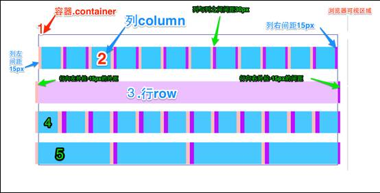

第七章 网格系统
7.1 实现原理
bootstrap将整个可视区域分为12等分。不过也可根据自己需要重新编译将修改份数，比如24或32，不过不建议这样使用。
.colomun 12 row 0
.colomun 12 row 1
.colomun 12 row 2
.colomun 12 row 3
7.2 工作原理
基本结构 .container > (.row > .col-?-? * ?) * ?
工作原理：
- 数据行
.row必须包含在容器.container中，以便为其赋予对齐方式和内边距。如：<div class="container"> <div class="row"></div> </div>
- 行
.row中可以添加.col-?-?，但数列之和不能超过平分的总列数，比如12。<div class="container"> <div class="row"> <div class="col-md-4"></div> <div class="col-md-8"> </div> </div>
- 具体内容放置在列
.col-?-?内，并且只有列.col-?-?才能作为行容器.row的直接子元素 - 个列通过padding来创建之间的间隔，最前和最后一列通过-margin来抵消padding
下面根据原理图简单解释：

- 最外边框，带有一大片白色区域，相当于浏览器的可视区域。bootstrap网格系统带有响应式效果，针对4类浏览器（超小屏，小屏，中屏和大屏）。 其断点是：768px，992px和1220px。
- 第二个边框（1）相当于容器
.container。针对不同的浏览器，其宽度也不一样：自动,750px,970px和1170px。源码为：.container { padding-right: 15px; padding-left: 15px; margin-right: auto; margin-left: auto; @media (min-width: 768px) { .container { width: 750px; } @media (min-width: 992px) { .container { width: 970px; } @media (min-width: 1200px) { .container { width: 1170px; } - 每列左右都有15px的padding，使之间有间隔。
- 为了使最后一列和最前一列与整行没有间隔在
.row上左右都设置了-15px的margin。
7.3 基本用法（列组合）
基本原则：列总和不能超过12，比如：
我占4列
我占8列
我占4列
我占4列
我占4列
我占3列
我占6列
我占3列
实现原理：每列左浮动，并根据列数设置宽度。
7.4 基本用法（列偏移）
如果不想两列紧邻，也不想通过margin来实现偏移，可以在.col-?-? 基础上追加类.col-?-offset-?。实现向右偏移，比如.cole-md-offset-3就相当于左margin两列.
每行中，列数及偏移列数总和也不能超过12。
实现原理：设置margin-left值。
我占2列，不偏移
我占2列，偏移一格
我占2列，偏移一格
我占3格，偏移一格
7.4 基本用法（位置互换）
默认状态下，列按照文档顺序排列，如果需要两列互换位置，可以添加类.col-*-push-? 和.col-*-pull-?其中？代表列数，push表示向右，pull表示向左拉近。
比如.container>.row>.col-sm-4 + .col-sm-8
中的两列需要互换位置，就应改为：.container>.row>.col-sm-4.col-sm-push-8 + col.sm-8.col-sm-pull-4。
一般状态：
我占4列
我占8列
交换位置后：
我占4列
我占8列
7.5 基本用法（列嵌套）
在一列.col-?-?中可以插入一个或多个.row容器，其宽度为100%，也就是外部列宽度。然后在这些行中插入列。
我占8列，里面插入了一个网格
我是内层列，我占4列
我是内层列，我占4列
我是内层列，我占4列